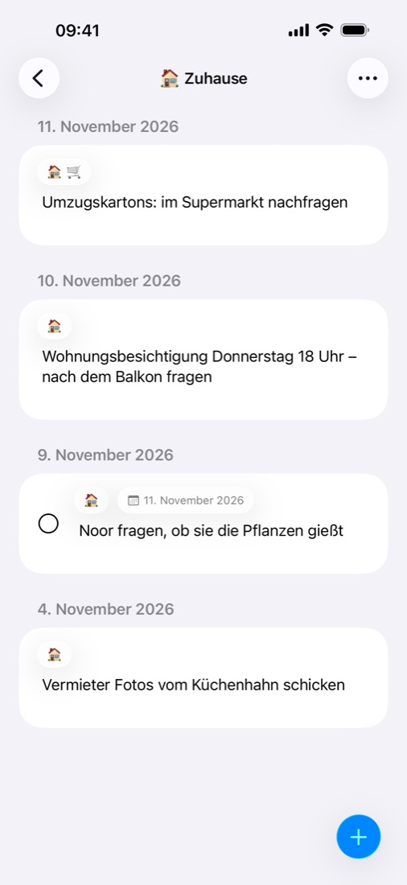

Tagesnotizen fürs iPhone
Jetzt notieren.
Jetzt notieren.
Später sortieren.
QuickNote öffnet direkt die Notiz von heute – so ist ein Gedanke gespeichert, bevor er weg ist. Ordnung bringst du hinein, wenn du Zeit hast.

✏️
Eine Notiz pro Tag
App öffnen und lostippen. Keine Ordner, keine Titel, nichts einzurichten.
🏷️
Tags mit Emoji
Gedanken nach Themen sortieren, wann immer du dazu kommst.
✅
To-dos & Erinnerungen
Jede Zeile wird zum To-do in Apples Erinnerungen.
📅
Auf jeden Tag verschieben
Schieb einen Gedanken auf den Tag, an den er gehört.
📥
Nichts geht verloren
Alles, was du noch nicht sortiert hast, an einem Ort.
🔒
Bleibt auf deinem iPhone
Kein Konto, kein Server, kein Tracking.
Hilfe
Fehler gefunden, Frage oder Idee? Erstelle ein Issue auf GitHub.
github.com/ionas-dev/QuickNote/issues